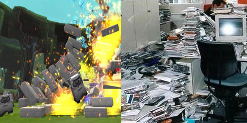

10 Examples of the Tetris Effect
by phil on Monday Sep 6, 2010 12:34 AM
The Tetris effect happens when you play a video game so much that you to visualize patterns from the game when going about real-life. For example, Tetris addicts often report seeing Tetris pieces when they close their eyes before falling asleep.
Being a video gamer myself, this is a regular occurrence for me. Here's ten examples of the Tetris effect from my own life. Feel free to add your own in the comments:
1. Tetris and parking - After playing Tetris for hours straight, I can't help but think of parking in terms of inserting blocks for just the right fit. This is especially true with parallel parking. Remember, just because your car can fit into the parking space, doesn't mean it should.
2. Grand Theft Auto and driving - Another car example. This is where after a long stretch of GTA, when you drive around, you just want to smash your car into pedestrians for points. Be very careful driving around cops after playing GTA, though.
3. Tony Hawk and grinding - The easiest way to get points in Tony Hawk is to bridge your tricks together with little grinds on the corners and rails. After playing TH, if I'm walking around town, I'll feel the sudden urge to balance on the edge of the curb like I'm grinding. Unfortunately, impromptu parkour is only cool if you know what you're doing.
4. World of Warcraft and real-life NPCs - Right-clicking is so important in World of Warcraft, that you often want to right-click people in real-life. I remember waiting in line for a bar and wanting to right-click on the bouncer to hand in my ID for my quest reward. People in real-life do not like being treated this way, so snap out of it.

5. Boom Blox and office supplies - If you haven't played Boom Blox, you've probably played other grab-and-throw games. With these types of games, you could be repeating the same grab-and-throw move over a thousand times in one sitting. So when I put down the Wiimote, I feel the urge to chuck my remote control or any items on my desk all over the place. Just be sure there are no innocent bystanders around when you do so.
6. Min-max games and personal finances - Heroes was a short-lived game on MySpace where you purchased farms and upgraded castles which would then earn you new streams of passive income. I played this game around the same time I got into Mint.com to organize my finances, and I soon became obsessed with reducing my recurring expenses. This is the only Tetris effect that seems obviously positive.
7. Give Up Robot and walking - When you spend a hundred times trying to throw the grappling hook just right, something changes in your brain. When we play video games, it activates our kinesthetic perception even though we are not physically moving. So by repeating this same movement over and over again, it's natural to want to swing around like a monkey immediately after playing.
8. Quake Mod grappling hook and walking - Same exact example. I remember being in a mall, wanting to get to the Gamestop on the 2nd floor, while I was still on the 1st floor. Rather than navigate the deliberately confusing mall stairs, I kept visualizing myself just throwing a line and zooming right to my location. Hopefully nobody noticed me standing there like that.
9. Bejeweled and bathroom tiles - Next to Tetris and GTA, this is probably the most common example of the Tetris effect I've heard of. I had never really understood the appeal of Bejeweled, until I got hooked on Bejeweled Blitz on facebook. After playing non-stop, and then taking a shower, I saw myself tapping on tiles to combine them. I'd also often visualize the sparkle effects and magical sound that accompany the action. That's what you live for, those satisfying sparkle effects.
10. Super Mario Brothers 2 and pulling plants - The resistance you feel while trying to pluck vegetables in SMB2 helps reinforce the kinesthetic impression. Like the grappling hook example, if you do this enough times, it gets imprinted into your kinesthetic memory. After playing SMB2 as a kid, I'd feel the urge to uproot everything around me from lamp posts to weeds. Although, my mom didn't complain when she saw me finding pleasure in pulling weeds from our garden.
Comments
Sherman Unkefer said on September 8, 2010 9:10 AM:
I suppose the obvious would also be Frogger and navigating the crosswalks during rush hour.
Alex said on November 27, 2011 4:38 PM:
Played bust a move for like a day with a bunch of friends when I was like 10? Practically hallucinating for the rest of the day...
Oh and of course any game with a constant health bar/stamina bar/money counter just seems to stay in my periphery for a while
Mike said on February 21, 2012 11:55 AM:
After playing through the entirety of Bioshock 2 in one sitting, I went out for dinner. It was dark by the time I finished and when I walked outside I freaked out that I was going to drown, being at the bottom of the ocean and all.